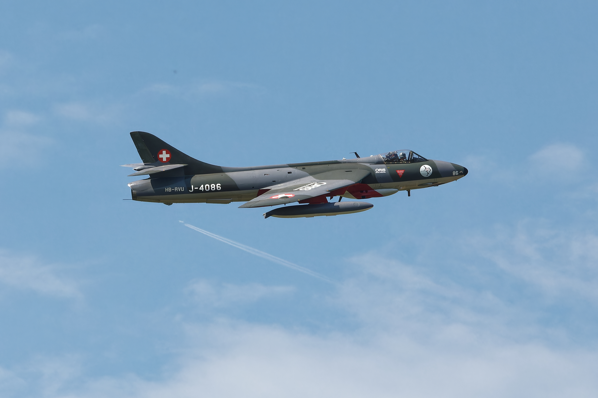
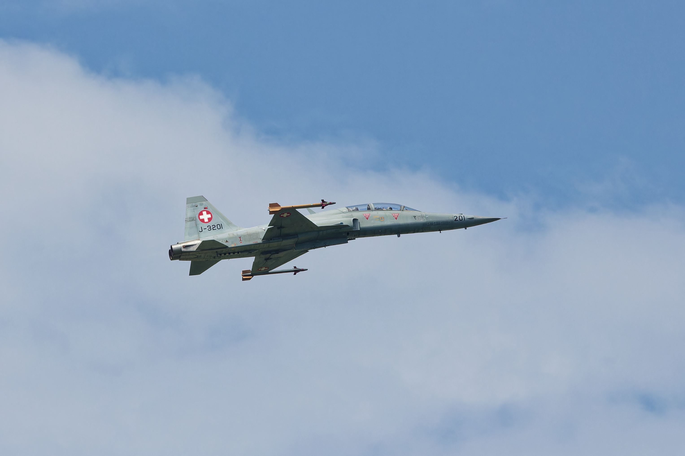
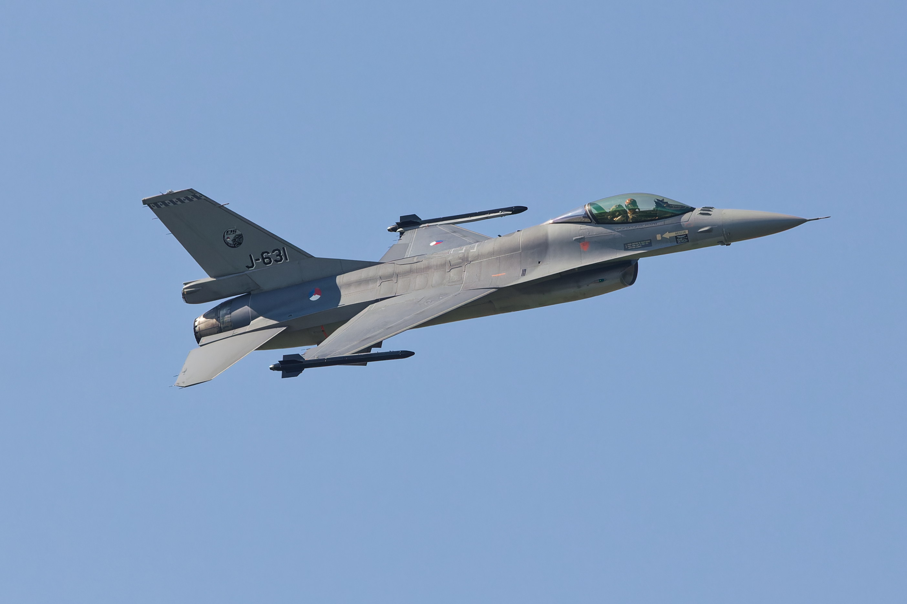
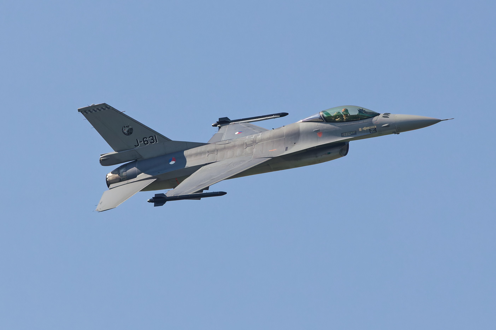

Einführung
Fighter Generations ordnen Kampfjets zu bestimmten Generationen zwischen 0 und 6 zu. Allerdings sind diese Zuordnungen nicht genau definiert und variieren von Quelle zu Quelle.
Kampfjets wurden erstmals in den 1990ern Generationen zugewiesen. Des Weiteren gibt es unzählige Skalen für Generationen. Die bekannteste ist die 1, 2, 3, 4, 4.5, 5, 6 Skala. Es gibt jedoch auch 0, 1, 2, 3, 4, 5 oder 1, 2, 3, 3.5, 4, 5 oder sogar 1, 2, 3, 4, 4+, 4++, 5, 6. Einigkeit besteht lediglich darüber, dass die Generation zwischen 1970 und 1990 meist in zwei bis drei Untergruppen eingeteilt wird. Wir bezeichnen diese als Kampfjets der vierten Generation, und der 4.5ten Generation. Sie sind heute die bei weitem verbreitetsten, jedoch werden heute nur noch ein paar der 4.5ten Gen. produziert. Die meisten Länder wechseln zur 5ten Generation, manche arbeiten sogar schon and der 6ten, die dann in ca. 10-15 Jahren in den Einsatz gehen soll.
Auch anhand welcher Eigenschaften die Flugzeuge den Generationen zugeordnet werden, ist umstritten. Einige Merkmale sind jedoch relativ klar definiert. Flugzeuge mit geraden Flügeln gehören zur 1. Generation, ab der 2. Generation treten sogenannte Swept Wings auf. Stealth ist eine entscheidende Eigenschaft für die 5te und 6te Generation, wobei nicht genau festgelegt ist, wie „stealthy“ ein Flugzeug dafür sein muss. Radar und Radar Missiles gibt es ab der 3. Generation, während „moderne“ Sensorsysteme meist ab der 4.5ten Generation vorkommen.
Einen Überblick über die einzelnen Generationen gibt es unten. Wichtig zu wissen ist, dass diese Generationen nur für Kampfjets gelten und keine offiziell festgelegte Klassifikation darstellen.
1st Generation
Beschreibt Jets während oder direkt nach dem zweiten Weltkrieg ihren Erstflug hatten. Sie zeichnen sich hauptsächlich durch ihre geraden Flügel aus, und dadurch, dass sie zwar schneller als Kolben motorige Flugzeuge sind, in allen anderen Gebieten jedoch unterlegen. Dies kommt daher, dass alte Jet-Triebwerke noch schwer und schwach sind und ausserdem nur langsam auf Schub Inputs reagieren. Dies kann meist auf die Nutzung von Centrifugal Flow Turbojets zurückgeführt werden. Sie haben des Weiteren nur Maschinengewehre als Bewaffnung und sehr limitierte Elektronik.
Beispiele: Me-262, F-80, Mig-9, Gloster Meteor
Venom

2nd Generation
Beschreibt Flugzeuge der späten 40er oder frühen 50er Jahre. Sie haben meist nach hinten gepfeilte Flügel und Axial Flow Turbojets, die viele der vorherigen Probleme lösen. Ausserdem besitzen sie sehr viel modernere Elektronik wie Feuerleitradars und Hydraulisch-Elektrische Steuersysteme. Sie besitzen nun auch Flugleistungen, die sie mit Kolbenflugzeugen vergleichbar machen. Ausserdem besitzen sie manchmal Infrarotgesteuerte Kurzstrecken-Lenkraketen. Sie gehören zu den am meisten produzierten Flugzeugen des Kalten Krieges. Wenige können auch schon Überschallgeschwindigkeiten erreichen.
Beispiele: F-86, Mig-15/17/19, F-100
Hunter
3rd Generation
Dies sind Kampfjets, die zwischen 1960 und 1975 gebaut wurden. Die grössten Veränderungen sind im Doktrin der Flugzeuge und somit in der allgemeinen Bewaffnung und deren Leistung. Sie sind nun alle Überschall-fähig, manchmal sogar bis zu Mach 2 oder 3. Wegen der neuen Lenkraketen Doktrin sind diese nun weniger manövrierfähig, haben dafür aber mehr Schub, Treibstoff und Waffen. Die Hauptbewaffnung bestehen nun nicht mehr aus Maschinengewehren, sondern umfassen Radar oder Infrarot Lenkraketen. Auch der Radar des Flugzeuges ist jetzt nicht mehr nur ein Feuerleitradar, sondern ein echtes Such- und Verfolgungsradar. Dies ermöglicht auch BVR Combat, also das Kämpfen ohne den Gegner visuell zu sehen (Beyond Visual Range). Erste Flugzeuge verwendeten auch frühe teildigitale Computer, wie zum Beispiel die F-4 Phantom, das zu dieser Zeit fortschrittlichste Flugzeug. Sie führte nicht nur ein teildigitales Feuerleitgerät mit Radar mit, sondern auch Mittelstrecken Lenkraketen wie die Aim-7, auch wenn diese eher schlechte Performance hatten.
Beispiele: Mig-21, F-4, F-5, Mig-23, EE-Lightning, Mirage III
F-5
Mirage III

4th Generation
Dies sind Kampfflugzeuge, die zwischen 1975 und 1990 gebaut wurden. Sie haben wiederum bessere Elektronik und Waffen mit noch längerer Reichweite, als die Vorgängergeneration. Ihr Hauptvorteil gegenüber der 3ten Generation ist jedoch die Einführung von Multirole Fähigkeiten. Dies bedeutet, dass ein Kampfjet mehrere Mission erfüllen konnte. Dieser Fortschritt wurde durch völlig neue Technologien ermöglicht, wie zum Beispiel der Digitale Multifunktionscomputer, integrierte Schaltkreise und vieles mehr, was durch Mikroelektronik möglich wurde. Frühe 4th Gen Jets waren zwar noch spezialisiert und hatten eine Hauptmission und konnte nur begrenzt oder sekundär andere Missionen erfüllen. Jedoch wurden die Jets sehr schnell vollständig multifunktional. So war die F/A-18A das erste Kampfflugzeug, das mit dem einfachen Umlegen eines Schalters zwischen Luft und Bodenkampf wechseln konnte. Auch verwendete die vierte Generation erstmals computerunterstützte, fortschrittliche Aerodynamik. So konnte man die Geschwindigkeit der dritten Generation mit der Leichtigkeit und Wendigkeit der zweiten kombinieren.
Ein weiterer Grund für diese Entwicklung war, dass erstmals Low Bypass Turbofans anstelle von Turbojets verwendet wurden. Diese reduzierten den Treibstoffverbrauch und erhöhten den Schub, was zu Thrust to Weight Ratios nahe 1:1 führte, wie zum Beispiel bei der F-15 und F-16. Besonders waren auch die F-14 und Su-24, die sogenannte "variable geometrie sweep wings" hatten, also Flügel mit verstellbare Pfeilung. Dies ermöglicht einen schnellen und einen langsamen Flug ohne Nachteile (abgesehen vom Gewicht).
Beispiele: F-14, F-15, F-16, F/A-18, Mig-29, Su 27/33, Su-24, Mirage 2000, Panavia Tornado
F-16
 

F/A-18


4.5th Generation
Die 4.5te Generation ist, wie man dem Namen entnehmen kann, eine Weiterentwicklung der 4ten Generation. Somit ist die Grenze zwischen den beiden eher schlecht definiert. Allgemein gehören Flugzeuge zur 4.5ten Generation wenn sie ein Design haben, das eher zur 4ten Generation passt (also ohne oder mit nur wenig Stealth), aber gewisse Technologien der 5ten Generation besitzen. Sie wurden primär zwischen 1990 und 2000 gebaut. Die fortschrittlichsten unter ihnen werden jedoch bis heute produziert. Einige signifikante Technologien sind AESA Radare, die statt einer sich physikalisch bewegenden Antenne einen elektromagnetisch gesteuerten Radarstrahl benutzen, Moderne "Imaging IR" Sensoren, Sensor Fusion und Datenlinks und teilweise auch schon RAM Beschichtungen. Solche Flugzeuge werden zwar noch produziert und weiterentwickelt, jedoch setzen fast alle Länder in der Zukunft auf Stealth. Dies begründet sich darin, dass Stealth Flugzeuge alle Flugzeuge der vorherigen Generation über Hunderte von Kilometern suchen, finden, und abschiessen können, Stealth Flugzeuge selber jedoch nur innerhalb von wenigen 10 Kilometern.
Beispiele: F-15E, F-16E, Su-30/35, Mig-35, F/A-18 EF, EF Typhoon, Rafale, J-11/15, J-10
Rafale


Eurofighter Typhoon

5th Generation
Die 5te Generation ist momentan die aktuellste, die im aktiven Dienst ist. Die ersten Modelle flogen zwar schon in den 80ern Jahren, aber dies waren erst Prototypen, Kampfbomber oder Spezialflugzeuge. Der erste 5th Gen Kampfjet war die F-22, die zwischen 1995 und 2005 in Dienst ging und bis heute als bester Luft-zu-Luft Kampfflieger aller Zeiten gilt. Nächste Projekte kamen zwar, waren aber alle amerikanisch. Zwischen 2010 und 2020 brachten dann jedoch auch Russland und China Flugzeuge der 5ten Generation in die Luft.
Der grösste Unterschied zur 4.5ten Generation sind die vollständig ins Design integrierten Stealth Eigenschaften, welche die RCS der Flugzeuge erheblich senkt. Zusammen mit Technik und Waffen, die sogar noch besser sind als die der 4.5ten Generation, können solche Flugzeuge unentdeckt bleiben und ihre Gegner trotzdem ausschalten. Um Stealth zu gewährleisten, verfügen sie oft über interne Waffen-Schächte, um die Aussenseite vollständig glatt und uniform zu halten. Dies reduziert zwar die Tragekapazität, jedoch können in Fällen, in denen Stealth unwichtig ist, zusätzliche Waffen aussen angebracht werden, was sie wieder zu Parität mit Flugzeugen der 4.5ten Generation bringen.
Einige weniger verbreitete Features sind voll integrierte Sensor Fusion, Thrust Vectoring und IRST / Multi Spectrum Targeting, also Zielfindung über mehrere Sensoren. Gerade IRST (Infrared Search and Track) ist heute extrem wichtig, da andere Stealth Flugzeuge mit Radar schwer zu finden sind, während ihre Hitzesignatur fast so gross wie die von 4.5th Gen Flugzeugen ist. Wie man es vom dauernden Technologiewettbewerb her kennt, sind die Produzenten von 5th Gen Flugzeugen jedoch schon damit beschäftigt, die Hitzesignatur ihrer Flugzeuge zu reduzieren, um auch dieses Loophole zu schliessen. Allgemein sind Flugzeuge der 5ten Generation noch weiträumig in Entwicklung und Verbesserung, so dass eine abschliessende Analyse schwierig ist.
Beispiele: F-22, F-35, Su-57, J-20, J-35
6th Generation
Flugzeuge, die voraussichtlich ab 2030 / 2035 in den Einsatz gehen werden, gehören zur sechsten Generation. Da noch keine Flugzeuge dieser Generation in aktivem Dienst sind, ist es schwierig, ihre Merkmale zu definieren. Allerdings sind sich die meisten Experten zumindest bei gewissen Punkten einig, welche Fähigkeiten ein Flugzeug dieser Generation haben sollte: Einerseits verbesserte Stealth Eigenschaften, da die Stealth Eigenschaften der 5ten Generation meist nur aus bestimmten Winkeln funktionieren, andererseits auch verbesserte Sensor Fusion und Kompatibilität mit KI-Drohnen. Es gibt noch einige andere Features, die oft mit der 6ten Generation in Verbindung gebracht werden, diese sind jedoch eher subjektiv. Einige dieser Features wären zum Beispiel das Fehlen von vertikalen Kontrollflächen für bessere Stealth Eigenschaften, variable Cycle Engines für mehr Range und Geschwindigkeit und Directed Energy Weapons, also Laser Waffen.